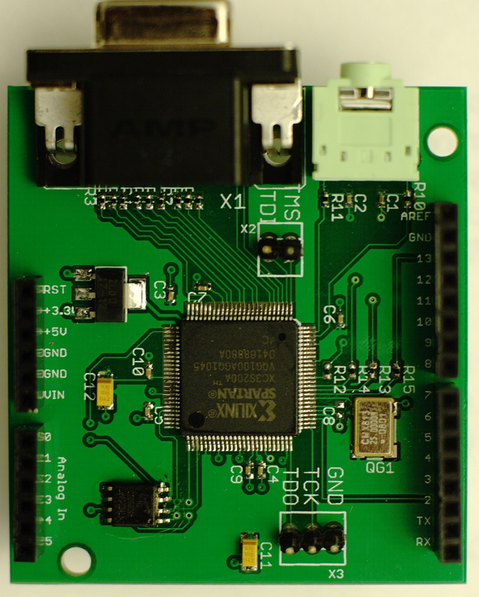

Making a Gameduino¶
The Gameduino board is a Xilinx FPGA - a fancy parallel processing chip - and a few support parts. If you’re familiar with Xilinx FPGAs, JTAG and soldering fine-pitch surface-mount components, you should be able to make a Gameduino board. Otherwise, getting started with FPGAs can be a bit of a steep learning curve. See this page (devboards) for some good ways to get started.
All the design files for Gameduino are open-source.
The Eagle board layout is under http://excamera.com/files/gameduino/eagle/
The Verilog source for ISE Webpack 11.1 is under http://excamera.com/files/gameduino/verilog/
This should be enough to get the Gameduino up and running. To load the SPI flash with the Gameduino image, see Xilinx application note XAPP974.
If there’s interest in the bare PCB, let me know (jamesb@excamera.com) and I’ll put it up on batchpcb.com.
{kind=link}
For more details on what the Gameduino can do, see Gameduino: a game adapter for microcontrollers.
Last modified $Date: 2011-05-13 11:32:42 -0700 (Fri, 13 May 2011) $